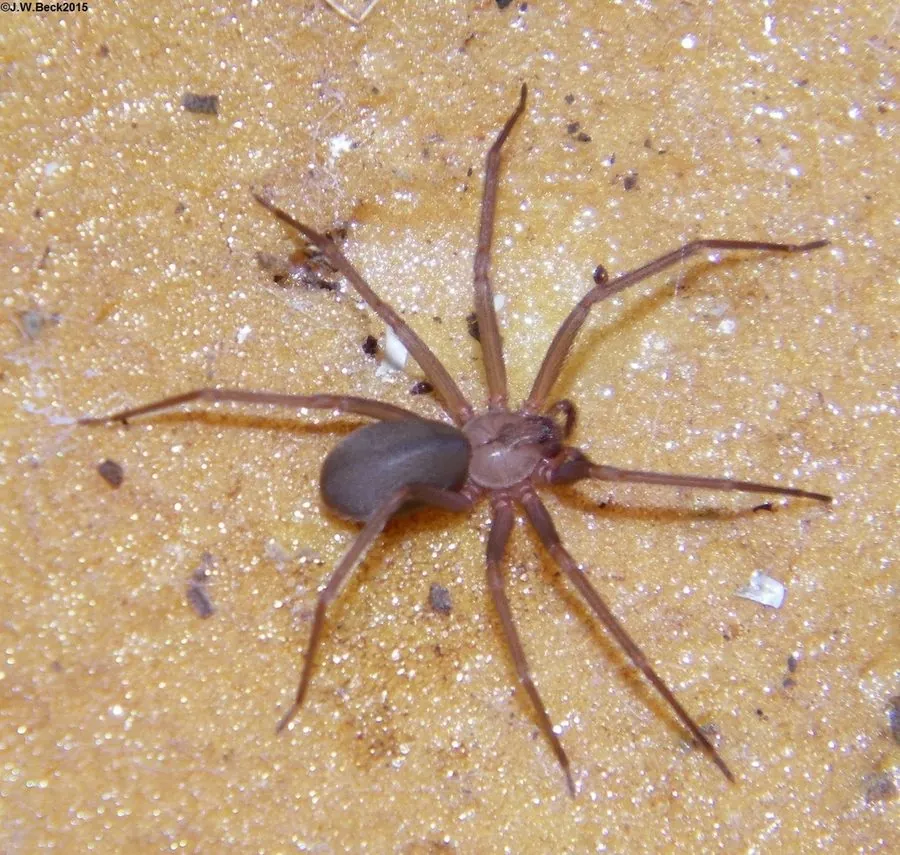

蛛形动物 · 动物界
褐隐士蜘蛛 Loxosceles reclusa

美国中南部常见的褐色蜘蛛，头胸部有提琴状斑纹，毒性较强，被咬后局部皮肤可能出现坏死，需及时就医。
- 分类
- 门节肢动物门纲蛛形纲目蜘蛛目科隐士蛛科属隐士蛛属
- 栖息环境
- 干燥的室内角落、衣柜、储藏室、阁楼及废弃建筑与石缝
- 地理分布
- 美国中南部及东部部分地区
- 保护级别
- IUCN 暂无评估；非中国原产，在中国无保护级别
物种志
褐隐士蜘蛛雌蛛体长 6–12 毫米，足展 15–25 毫米，体色呈浅褐或黄褐色，头胸部有一个深色的提琴形斑纹，柄部朝前，“提琴蛛”之名由此而来；六只眼睛排成三组，这也是它区别于多数蜘蛛的特征。它不结捕猎网，而是结不规则的薄网并四处游走。
它分布于美国中南部和部分东部地区，栖息于干燥的角落、衣柜、储藏室、阁楼和废弃建筑，夜间捕食昆虫和其他小型无脊椎动物。雌蛛产下含 20–50 枚卵的卵囊，悬挂在隐蔽处，幼蛛孵化后独立生活。褐隐士蜘蛛毒性较强，毒液含坏死性毒素，被咬后局部可能先出现红肿疼痛，随后形成皮肤坏死性溃疡，需避免接触并及时就医；它性情胆小，一般不主动攻击人，但被衣物、鞋袜挤压时可能咬人。
形态与习性
- 食性昆虫和其他小型无脊椎动物
- 体长6–12 mm，足展 15–25 mm
- 寿命约 1–2 年
- 繁殖卵生，每卵囊 20–50 枚，悬挂于隐蔽处
- 活动节律夜行性，白天藏在角落缝隙
- 毒性毒性较强，被咬后皮肤可能坏死，需及时就医
- 特征头胸部有提琴状深色斑纹，六眼排成三组
趣味知识
- 褐隐士蜘蛛头胸部的深色斑纹形似提琴，因此又叫“提琴蛛”。
- 它只有六只眼睛，排成三组，与多数蜘蛛的八眼结构不同。
- 被褐隐士蜘蛛咬伤后应尽快就医，不要自行挤压或处理伤口。